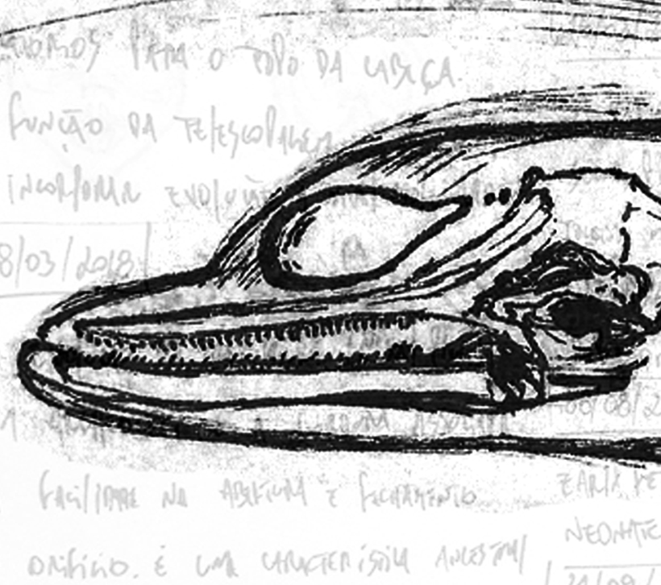

Field work Some footage from field works I like to see sometimes when being too much on the computer. Fisheries Observer Fishermen life. Heading into the sea from the mouth of the Tramandaí river Imbé, Rio Grande do Sul, Brazil. Long-line fishing boat in the southern Atlantic Ocean. Rio Grande do Sul, Brazil. Dedicated Cetacean Surveys Common dolphins feeding just under my nose! Kleinbaai, Eastern Cape, South Africa. Field work preparation at Sea Search Research and Conservation. Muizenberg, Cape Town, South Africa. Field work dedicated to investigate acoustics and population dynamics of the Indian Ocean humpback dolphin (Sousa plumbea) Mossel Bay, Eastern Cape, South Africa. Field work to sample Photo-ID of Lahille's bottlenose dolphins (Tursiops gephyreus as part of the Gephyreus Project. Always a challenge at the Tramandaí river mouth! Tramandaí/Imbé, Rio Grande do Sul, Brazil. Research Stories behind scientific publications List of publications Sound production in dolphins  Research tools Field work Home ResearchGate Github Linkedin Twitter Facebook Instagram YouTube © GFrainer.